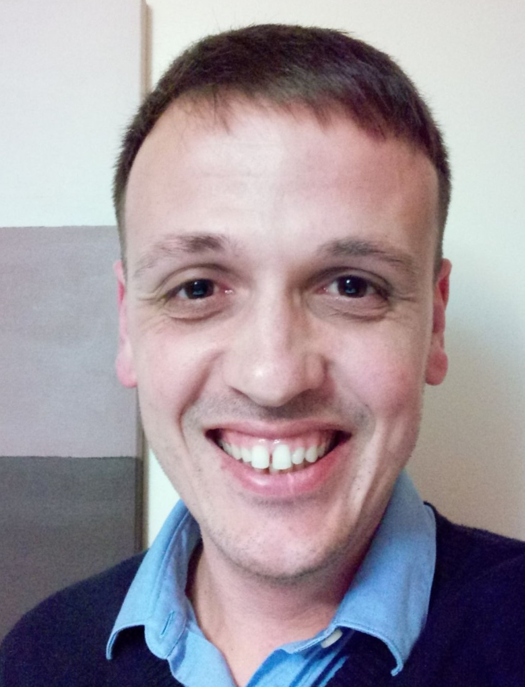

Carmelo Calafiore

Profession
He is a PhD student in Psychology and Computer Science at the University of Essex.
Online Experiments
He has run 9 online experiments:
- Proactive Action Recognition with Locked View Movements;
- Proactive Action Recognition with Controlled View Movements and Slightly Unclear Images.
- Proactive Action Recognition with Controlled View Movements and Very Unclear Images.
- Proactive Action Recognition with Controlled View Movements and T Poses and Unclear Images.
- Proactive Action Recognition with Random View Movements and Slightly Unclear Images.
- Proactive Action Recognition with Random View Movements and Very Unclear Images.
- Proactive Action Recognition with Controlled View Movements and with Obstacles.
- View Theta Recognition.
- View Phi Recognition.